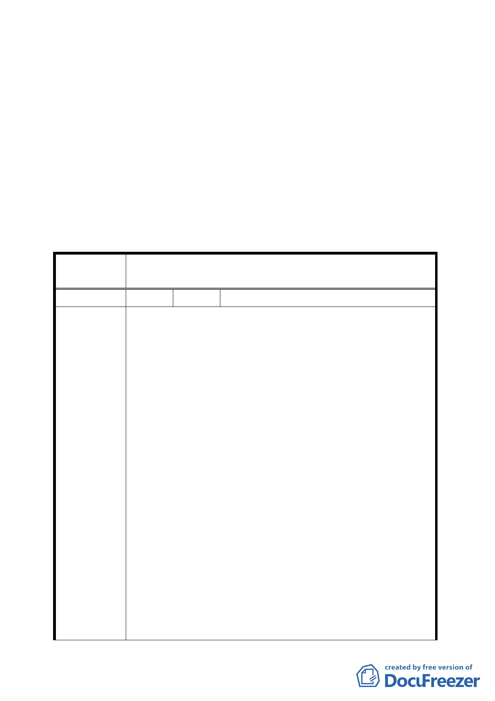

一、計畫書第 1 頁計畫緣起「…如發生爆炸意外，將嚴重影響…」
文字修正為「…如發生意外，恐將嚴重影響…」。
二、計畫書第 7 頁「柒、其他」第（二）項中所述及行政訴訟及
損失補償等非關都市計畫變更議題，予以刪除。
三、本案公展計畫圖及說明書中「變更位置示意圖」圖例「變更
公園用地為公園用地」應予修正為「變更加油站用地為公園
用地」。
四、公民或團體陳情意見審決如後附綜理表。
臺北市都市計畫委員會公民或團體陳情意見綜理表
案
名
變更臺北市士林區至善段五小段 80、81、117 地號等加油站
用地為公園用地細部計畫案
編 號 1 陳情人 兆亨事業有限公司
都市計畫異議書
1.貴府辦理變更臺北市士林區至善段五小段80、81、117地號
等加油站用地為公園用地細部計畫案，公開展覽公告所載
內容，故意曲解法令，圖利他人，為此提出嚴重異議。
2.本件涉及合法加油站建照遭廢止，導致人民合法權益無端
蒙受巨額損失，原處分機關迄今無法提出廢止建照之事證
依據，現貴府竟又再以：避免加油站爆炸意外危及故宮國
寶之臆測之詞，作為辦理變更細部計畫案之依據，試問：
加油站是否毫無法規可以管制安全？如果本公司加油站爆
炸意外危及故宮國寶，台北市任何一座加油站爆炸意外是
陳 情 理 由 否也危及周圍民宅之生命安全？市民生命是否不如國寶 ?
3.公開展覽公告所載計畫緣起明載，本加油站基地距正館距
離約400公尺，在400公尺外一座加油站爆炸，真能波及故
宮國寶？
4.請提出證據，證明深埋地下，且依加油站營建安全標準所
興建之加油站仍有爆炸之疑慮。如果提不出證據，臺北市
政府與反對興建加油站之ㄧ般民眾有何差別？此種以罔顧
加油站安全管理法規之臆測之詞，作為辦理變更細部計畫
案之理由，未來若其他住在加油站毗臨之民眾，也以行政
程序法不得有差別待遇作理由，要求廢止加油站許可、要
37